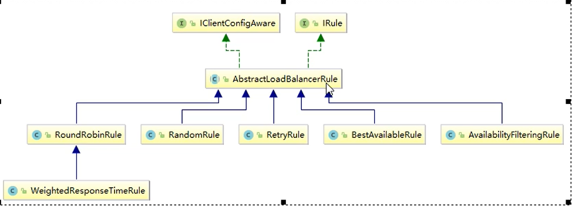
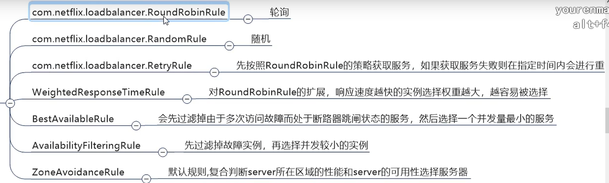
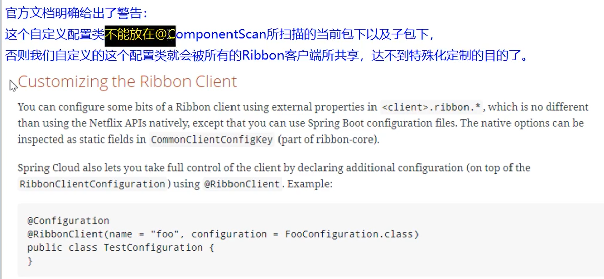

# Ribbon 介绍
目前已停更
Spring Cloud Ribbon 是基于 Netflix Ribbon 实现的一套客户端 负载均衡的工具。
简单的说，Ribbon 是 Netflix 发布的开源项目，主要功能是提供客户端的软件负载均衡算法和服务调用。Ribbon 客户端组件提供一系列完善的配置项如连接超时，重试等。简单的说，就是在配置文件中列出 Load Balancer（简称 LB）后面所有的机器，Ribbon 会自动的帮助你基于某种规则（如简单轮询，随机连接等）去连接这些机器。我们很容易使用 Ribbon 实现自定义的负载均衡算法。
LB 负载均衡（Load Balance）是什么
简单的说就是将用户的请求平摊的分配到多个服务上，从而达到系统 HA（高可用）
常见的负载均衡有软件 Nginx，LVS，硬件 F5 等。
Ribbon 本地负载均衡客户端 VS Nginx 服务端负载均衡区别
Nginx 是服务器负载均衡，客户端所有请求都会交给 nginx，然后由 nginx 实现转发请求。即负载均衡是由服务端实现的。
Ribbon 本地负载均衡，在调用微服务接口时候，会在注册中心上获取注册信息服务列表之后缓存到 VM 本地，从而在本地实现 RPC 远程服务调用技术。
集中式 LB
即在服务的消费方和提供方之间使用独立的 LB 设施（可以是硬件，如 F5，也可以是软件，如 nginx），由 设 h 责 ei 问 i 求 i 种略转发至服务的提供方；
进程内 LB
将 LB 逻辑集成到消费方，消费方从服务注册中心获知有哪些地址可用，然后自己再从这些地址中选择出一个合适的服务器。
Ribbon 就属于进程内 LB，它只是一个类库，集成于消费方进程，消费方通过它来获取到服务提供方的地址。
# Ribbon 的使用
负载均衡 + RestTemplate
# 配置
/** | |
* @author WangXuefeng | |
* @version 1.0 | |
* @date 2021/1/1 0:24 | |
* @description | |
*/ | |
@Configuration | |
public class ApplicationContextConfig { | |
// 填入容器开启负载均衡功能 | |
@Bean | |
@LoadBalanced | |
public RestTemplate getRestTemplate(){ | |
return new RestTemplate(); | |
} | |
} |
# 使用
@DeleteMapping("delete/{id}") | |
public CommonResult<Boolean> delete(@PathVariable Long id){ | |
try { | |
restTemplate.delete(PAYMENT_URL + "payApi/payment/"+id,CommonResult.class); | |
return new CommonResult<Boolean>(200,"删除成功",true); | |
} catch (RestClientException e) { | |
return new CommonResult<>(500,"删除失败 -> " + e.getMessage(),false); | |
} | |
} |
# Ribbon 核心组件 IRUE
IRule：根据特定算法中从服务列表中选取一个要访问的服务

# 具体实现

# 替换默认的轮询分发

测试使用随机分发
此配置不要放在启动类同级包下
/** | |
* @author WangXuefeng | |
* @version 1.0 | |
* @date 2021/8/26 10:51 | |
* @description 替换自己指定的负载均衡 | |
*/ | |
@Configuration | |
public class MySelfRule { | |
@Bean | |
public IRule iRule(){ | |
return new RandomRule(); | |
} | |
} |
需要在启动类上面开启注解并指定替换的规则类
@SpringBootApplication | |
@EnableEurekaClient // 此处服务名大写 | |
@RibbonClient(name = "CLOUD-PAYMENT-SERVICE",configuration = MySelfRule.class) // 服务名称，自定义分发规则类 | |
public class OrderMain80 { | |
public static void main(String[] args) { | |
SpringApplication.run(OrderMain80.class,args); | |
} | |
} |
# 负载轮询算法原理
# 原理
负载均衡算法：rest 接口第几次请求数 % 服务器集群总数量 = 实际调用服务器位置下标，每次服务重启动后 rest 接口计数从 1 开始。
List<Servicelnstance> instances = discoveryClient.getinstances（"CLOUD-PAYMENT-SERVICE"）； |
如：
List[0]instances = 127.0.0.1：8002 | |
List[1]instances = 127.0.0.1：8001 |
8001+ 8002 组合成为集群，它们共计 2 台机器，集群总数为 2，按照轮询算法原理：
当总请求数为 1 时：1%2 - 1 对应下标位置为 1，则获得服务地址为 127.0.0.1：8001
当总请求数位 2 时：2%2 - 0 对应下标位置为 0，则获得服务地址为 127.0.0.1：8002
当总请求数位 3 时：3%2 - 1 对应下标位置为 1，则获得服务地址为 127.0.0.1：8001
当总请求数位 4 时：4%2 - 0 对应下标位置为 0，则获得服务地址为 127.0.0.1：8002
如此类推...
# 源码分析
public class RoundRobinRule extends AbstractLoadBalancerRule { | |
private AtomicInteger nextServerCyclicCounter; | |
private static final boolean AVAILABLE_ONLY_SERVERS = true; | |
private static final boolean ALL_SERVERS = false; | |
private static Logger log = LoggerFactory.getLogger(RoundRobinRule.class); | |
public RoundRobinRule() { | |
this.nextServerCyclicCounter = new AtomicInteger(0); | |
} | |
public RoundRobinRule(ILoadBalancer lb) { | |
this(); | |
this.setLoadBalancer(lb); | |
} | |
public Server choose(ILoadBalancer lb, Object key) { | |
if (lb == null) { | |
log.warn("no load balancer"); | |
return null; | |
} else { | |
Server server = null; | |
int count = 0; | |
while(true) { | |
if (server == null && count++ < 10) { | |
List<Server> reachableServers = lb.getReachableServers(); | |
// 此处获取所有集群服务器作为轮询提供的服务器 | |
List<Server> allServers = lb.getAllServers(); | |
int upCount = reachableServers.size(); | |
int serverCount = allServers.size(); | |
if (upCount != 0 && serverCount != 0) { | |
int nextServerIndex = this.incrementAndGetModulo(serverCount); | |
// 根据计算轮询的下标获取集群服务器 | |
server = (Server)allServers.get(nextServerIndex); | |
if (server == null) { | |
Thread.yield(); | |
} else { | |
if (server.isAlive() && server.isReadyToServe()) { | |
return server; | |
} | |
server = null; | |
} | |
continue; | |
} | |
log.warn("No up servers available from load balancer: " + lb); | |
return null; | |
} | |
if (count >= 10) { | |
log.warn("No available alive servers after 10 tries from load balancer: " + lb); | |
} | |
return server; | |
} | |
} | |
} | |
// 计算下标索引 | |
private int incrementAndGetModulo(int modulo) { | |
int current; | |
int next; | |
// 自旋锁 | |
do { | |
current = this.nextServerCyclicCounter.get(); | |
next = (current + 1) % modulo; | |
} while(!this.nextServerCyclicCounter.compareAndSet(current, next)); | |
return next; | |
} | |
public Server choose(Object key) { | |
return this.choose(this.getLoadBalancer(), key); | |
} | |
public void initWithNiwsConfig(IClientConfig clientConfig) { | |
} | |
} |
# 手写
实现轮询功能
定义接口
/** | |
* @author WangXuefeng | |
* @version 1.0 | |
* @date 2021/8/26 15:33 | |
* @description | |
*/ | |
public interface LoadBalance { | |
ServiceInstance instances( List<ServiceInstance> instances); | |
} |
实现
@Component | |
public class MyLB implements LoadBalance { | |
private AtomicInteger integer = new AtomicInteger(0); | |
public final int getAndIncrement() { | |
int current; | |
int next; | |
do { | |
current = integer.get(); | |
next = current == Integer.MAX_VALUE ? 0 : current + 1; | |
} while (!integer.compareAndSet(current, next)); | |
System.out.println("第几次访问，next次数"+next); | |
return next; | |
} | |
@Override | |
public ServiceInstance instances(List<ServiceInstance> instances) { | |
int index = getAndIncrement() / instances.size(); | |
return instances.get(index); | |
} | |
} |
使用
注入
// 服务发现 | |
@Autowired | |
private DiscoveryClient discoveryClient; // 这就是注册中心可以拿到很多注册中心的信息，b | |
// 自定义的 | |
@Autowired | |
LoadBalance loadBalance; |
接口
@GetMapping("port") | |
public String port(){ | |
List<ServiceInstance> instances = discoveryClient.getInstances("CLOUD-PAYMENT-SERVICE"); | |
ServiceInstance ins = loadBalance.instances(instances); | |
URI uri = ins.getUri(); | |
return restTemplate.getForObject(uri+"payApi/getPort/", String.class); | |
} |